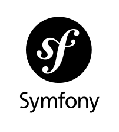

Mon carnet de stage



- Équipe de 5
L’objectif principal a été d’optimiser et d’améliorer ‘Mon Carnet de Stage’, une application existante et destinée à accompagner les étudiants dans le suivi de leurs candidatures pour leur recherche de stages. L’objectif principal de ce projet n’est pas d’ajouter des fonctionnalités, mais d’évaluer et d’améliorer la qualité de l’application. Ce logiciel possède deux parties : une partie application mobile à destination des étudiants et une partie web pour le professeur tuteur des stages.
Compétences
- Faire évoluer une application existante
- Vérifier et valider la qualité de l’application par les tests
- Identifier les critères de faisabilité d’un projet informatique
Mes contributions
- Gestion du back-end des offres et candidatures sur la partie android
- Création des tests fonctionnels et utilisateurs pour la partie android